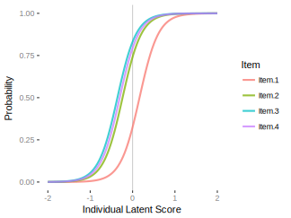
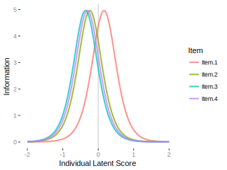
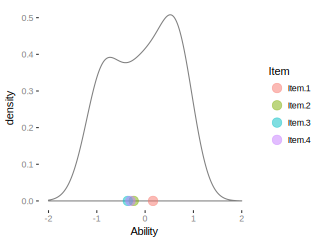
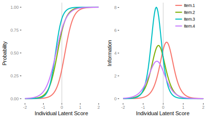

Item Response Theory
Item Response Theory (IRT) is a class of latent variable models with a long history in the testing environment (e.g. scholastic aptitude), but are actually a more general latent variable approach that might be applicable to a wide variety of settings. In the typical scenario, we might have a set of test items which are simply binary indicators for whether the item was answered correctly. The relationship between IRT and SEM comes in the form of a specific type of factor analysis depending on the type of IRT model being considered.
Standard Models
We can begin our understanding of IRT with an example with a logistic regression model.
\[g(\mu) = X\beta\] \[\pi = g^{-1}(\mu)\] \[y \sim \mathrm{Bernoulli}(\pi)\]
The link function \(g(.)\) is the logit function, and its inverse, the logistic (or sigmoid) function, maps our linear predictor, the logit, or log odds (\(\ln(\pi)/\ln(1-\pi)\)), to the probability scale, \(\pi\). Finally, our binary response is bernoulli distributed (i.e. binomial with size=1). Let’s see this for a single observation to remove any mystery.
logit = -1
exp(logit)/(1+exp(logit)) # convert logit to probability via logistic function[1] 0.26894141/(1+exp(-logit)) # convert logit to probability (alternate)[1] 0.2689414plogis(logit)[1] 0.2689414prob = .75
logit = log(.75/(1-.75)) # convert probability to logit
logit[1] 1.098612plogis(logit) # and back[1] 0.75Now let’s speak more generally, and say that with our response \(y\) we are concerned with the probability that a person answers correctly. In terms of a logistic regression model:
\[P(y=1) = f(X)\]
In other words, the probability of choosing the correct response (or simply endorsing an attitude or many other scenarios), \(y=1\), is some function of the X variables, which will at a minimum be the items and person scores for an IRT model.
One Parameter Model
We now turn to specific IRT models. The one-parameter, a.k.a. Rasch, model (1PM) can be expressed as follows:
\[P(y=1|\theta, \delta) = \mathrm{logis}(\theta_i-\delta_j)\]
In this setting, the probability of endorsement (or getting an item correct), \(\pi_{ij}\), is a function of the difficulty of item \(j\), \(\delta_j\) above, and the latent trait (ability) of person \(i\), \(\theta_i\). In other words, it’s a specific type of logistic regression model. In the testing context, a person with more ‘ability’ relative to the item difficulty will answer correctly. In terms of the logit:
\[\mathrm{logit_{ij}} = \mathrm{log}(\frac{\pi_{ij}}{1-\pi_{ij}}) = \theta_i-\delta_j\]
IRT often utilizes a different parameterization, though the results are the same.
There is an additional parameter, \(\alpha\), item discrimination, which refers to the item’s ability to distinguish one person from another. In the Rasch model it is held constant, and in its original formulation it was fixed at 1. If we add it to the mix we have:
\[P(y=1|\theta, \delta) = \mathrm{logis}(\alpha(\theta_i-\delta_j))\]
As we will see later, the two parameter IRT model estimates the discrimination parameter for each item. Note also, the ltm package we will use doesn’t fix the discrimination parameter to be 1 in the 1PM, so you’ll actually have an estimate for it, but it’s still constant across items.
To begin we’ll use the abortion data that comes with the ltm package. I provide this non-testing example so that one will be clear that IRT is not just for testing data, though I will often refer to the testing lingo for additional context. It regards 379 individuals who were asked if the law should allow abortion under the circumstances presented for each item:
- Item 1: The woman decides on her own that she does not.
- Item 2: The couple agree that they do not wish to have a child.
- Item 3: The woman is not married and does not wish to marry the man.
- Item 4: The couple cannot afford any more children.
data(Abortion, package='ltm')
# for later use in SEM, convert to ordered factors
Abortion_asfactor = mutate_all(Abortion, ordered)
colnames(Abortion_asfactor) = paste0('Item_', 1:4)The ltm package provides some nice descriptives via the descript function.
Descriptive statistics for the 'Abortion' data-set
Sample:
4 items and 379 sample units; 0 missing values
Proportions for each level of response:
0 1 logit
Item 1 0.5620 0.4380 -0.2493
Item 2 0.4063 0.5937 0.3791
Item 3 0.3641 0.6359 0.5575
Item 4 0.3826 0.6174 0.4786
Frequencies of total scores:
0 1 2 3 4
Freq 103 33 37 65 141
Point Biserial correlation with Total Score:
Included Excluded
Item 1 0.8153 0.6664
Item 2 0.8663 0.7531
Item 3 0.8758 0.7726
Item 4 0.8344 0.7016
Cronbach's alpha:
value
All Items 0.8707
Excluding Item 1 0.8573
Excluding Item 2 0.8223
Excluding Item 3 0.8148
Excluding Item 4 0.8430
Pairwise Associations:
Item i Item j p.value
1 1 4 <2e-16
2 1 3 <2e-16
3 2 4 <2e-16
4 1 2 <2e-16
5 2 3 <2e-16
6 3 4 <2e-16Now we’ll start by examining the initial results from the 1PM by using the rasch function, for both IRT parameterizations. If you want to look at the original formulation with discrimination fixed to 1.0 I show the code for that, but not the results.
library(ltm)
irt_rasch_par1 = rasch(Abortion, IRT.param=F)
irt_rasch_par2 = rasch(Abortion, IRT.param=T)
# irt_rasch_original = rasch(Abortion, IRT.param=T, constraint = cbind(ncol(Abortion) + 1, 1))
irt_rasch_par1
irt_rasch_par2
Call:
rasch(data = Abortion, IRT.param = F)
Coefficients:
Item 1 Item 2 Item 3 Item 4 z
-0.729 1.054 1.596 1.354 4.457
Log.Lik: -708.55
Call:
rasch(data = Abortion, IRT.param = T)
Coefficients:
Dffclt.Item 1 Dffclt.Item 2 Dffclt.Item 3 Dffclt.Item 4 Dscrmn
0.164 -0.237 -0.358 -0.304 4.457
Log.Lik: -708.55Again, the parameterization used doesn’t really matter (note the identical log likelihoods and discrimination). Though setting IRT.param=T is perhaps more common in the IRT world, the other is more in keeping with standard logistic models elsewhere. The gist is, that the first item is ‘more difficult’, i.e. less likely to be endorsed by default, relative to the other items. In the second parameterization, we can think of it as requiring a latent trait score above average (i.e. 0) for endorsement. We can see this even by just looking at the proportion of endorsements via colMeans.
Now let’s look at some of the individual latent trait scores. By default, ltm will only provide scores for the unique response patterns, and in fact for the standard estimation only the response patterns are required rather than all the observations. With only items and no other individual information, multiple response patterns of the same type are redundant in estimating the latent trait. These are obtained with the factor.scores function. Other information includes standard errors, and observed and expected frequencies.
Item Analysis
We can obtain some additional results to aid our understanding, as well as distinguish some of the different IRT models we’ll discuss. We’ll start with the item characteristic curve (ICC). It plots the probability of endorsement as a function of the latent person trait, and takes on the familiar sigmoid shape due to the underlying logistic function.

In this case we can see that three of the items essentially behave identically, and in general distinguish (slightly less than average) individuals. The first item would however would take more ‘ability’ before endorsement, i.e. it is more ‘difficult’ in test taking terms, but even then it is not too different from the others. We can now start to think of the latent trait as representing a pro-choice stance, where at the average score the person would likely be endorsing all but the first item.
Another way to look at this is in terms of item information52. The way one can interpret this is that it tells us how individuals, in terms of the latent trait, are distinguished best by the items. The item information curves (IIC) are the derivative of the item characteristic curve, and so tell us the rate of change in that probability. It is a maximum at the inflection point of the ICC, i.e. when the probability of endorsement/correct vs. not is equal. In addition, the peak of the IIC is at point of item difficulty on the latent trait scale. In other words, in the IRT parameterization, the estimate of an item’s difficulty is that point on the latent scale where half the subjects endorse (get correct) the item, or where the information for that item is at a maximum.
Because we don’t estimate separate item discrimination, all items have the same information and the same distribution. In this case, items 2-4 have more information for those scoring below average on the latent trait, while item 1 has most for those slightly above.

For further interpretation, consider a worst case scenario. Individuals would have the same chance of getting the answer correct regardless of ability. In other words the ICC would be flat, i.e. a constant. The derivative of a constant is zero, meaning the item has no information at all.
One final interpretation of item information- had we done a standard factor analysis, it would be equivalent to the ratio of the communality, i.e. the squared loading (or sum of for multiple factors) for that item to its uniqueness. So item information can be seen as the reciprocal of the error of measurement for that item.
Furthermore, we can get total test information by simply summing the item information scores. This allows us to take a specific strategies when designing a test or scale, e.g. to provide maximum information at particular points of difficulty or be more or less uniform across a wide range of ability. We can see that the bulk of the test’s information is for those individuals between -1 and 1 on the latent trait.
Call:
rasch(data = Abortion, IRT.param = T)
Total Information = 17.83
Information in (-1, 1) = 17.08 (95.81%)
Based on all the itemsAnd can get individual item information as the area under the IIC.
Call:
rasch(data = Abortion, IRT.param = T)
Total Information = 4.46
Information in (-1, 1) = 4.33 (97.1%)
Based on items 1Finally we can look at the density plot of the latent scores. Dots reflect the difficulty estimates from the IRT parameterization.

At this point we’ll take a moment to summarize things. IRT models can be seen as a specific type of logistic regression model. The 1PM assumes a latent individual score as well as item-specific difficulty, and from the model, we can gain information about person performance as well as item characteristics. With extensions we’ll gain even more information about how the items and individuals function.
1PM as a Mixed Model
As an additional means of understanding, we can think of IRT from the perspective of a mixed model. In this approach, we can melt the data into long format such that multiple rows/observations pertain to an individual’s response for the items. We then run a mixed model predicting the binary response with a fixed effect for item and a random effect for person. The fixed effects for item represent item difficulty, while The latent trait in the IRT for the person is the random effect for that person in the mixed model. For easier presentation we’ll omit the intercept.
Abortion_long = gather(data.frame(Subject=1:nrow(Abortion), Abortion),
key=Item, value=Response, -Subject, factor_key=T) %>%
arrange(Subject, Item)
head(Abortion_long, 8) Subject Item Response
1 1 Item.1 1
2 1 Item.2 1
3 1 Item.3 1
4 1 Item.4 1
5 2 Item.1 1
6 2 Item.2 1
7 2 Item.3 1
8 2 Item.4 1## See https://stat.ethz.ch/pipermail/r-sig-mixed-models/2010q4/004668.html
library(lme4)
lme_rasch = glmer(Response ~ -1 + Item + (1|Subject), Abortion_long,
family=binomial(link='logit'))
summary(lme_rasch, cor=F)Generalized linear mixed model fit by maximum likelihood (Laplace Approximation) ['glmerMod']
Family: binomial ( logit )
Formula: Response ~ -1 + Item + (1 | Subject)
Data: Abortion_long
AIC BIC logLik deviance df.resid
1471.7 1498.4 -730.9 1461.7 1511
Scaled residuals:
Min 1Q Median 3Q Max
-2.6205 -0.3029 0.1283 0.3790 3.5635
Random effects:
Groups Name Variance Std.Dev.
Subject (Intercept) 13.89 3.727
Number of obs: 1516, groups: Subject, 379
Fixed effects:
Estimate Std. Error z value Pr(>|z|)
ItemItem.1 -0.6670 0.2768 -2.409 0.015982 *
ItemItem.2 1.0165 0.2829 3.593 0.000327 ***
ItemItem.3 1.4998 0.2918 5.140 2.75e-07 ***
ItemItem.4 1.2851 0.2875 4.470 7.81e-06 ***
---
Signif. codes: 0 '***' 0.001 '**' 0.01 '*' 0.05 '.' 0.1 ' ' 1Aside from the estimation approach, the only difference is that the IRT model assumes the latent ability of person is distributed as standard normal, and estimates the discrimination parameter as a multiplier of that ability, \(\alpha \cdot N(0,1)\). The mixed model on the other hand assumes that the random effects are distributed as normal with mean zero and standard deviation equal to the discrimination parameter, \(N(0,\alpha)\). In this case lme4 estimates a slightly lower discrimination parameter53.
Comparing the fixed effects of the mixed model to the first parameterization of the IRT, they are quite similar.
ltm lme
Item 1 -0.7293065 -0.6669831
Item 2 1.0543555 1.0165352
Item 3 1.5961332 1.4998087
Item 4 1.3543951 1.2850734Same goes for the latent individual scores. Since the Abortion data is essentially ordered by pattern of response, I’ll mix it up a little bit by displaying a random ordering (idx). As the results are on different scales, we can alternate rescaling one or the other to put them on equal footing. The correlation of the scores is essentially 1.0. Note that I do not display the initial data processing.
head(data.frame(ltm = discrimnation*iscore_rasch[idx],
lmer = iscore_lme[idx])) ltm lmer
1 2.9014753 2.6075672
2 -0.8284266 -0.7685527
3 -4.0267853 -3.6739666
4 -4.0267853 -3.6739666
5 2.9014753 2.6075672
6 2.9014753 2.6075672head(data.frame(ltm = iscore_rasch[idx],
lmer = iscore_lme[idx]/RE_stddev)) ltm lmer
1 0.6509795 0.6996604
2 -0.1858671 -0.2062175
3 -0.9034558 -0.9857958
4 -0.9034558 -0.9857958
5 0.6509795 0.6996604
6 0.6509795 0.6996604We see the same thing with probability of item endorsement. In the mixed effect model, these are the unconditional estimated probabilities, i.e. those that ignore the individual-specific effect. In the IRT model, these are the expected probabilities at the average latent trait score (i.e. 0), which amounts to the exact same thing.
ltm lme
Item 1 0.3253469 0.3391727
Item 2 0.7416104 0.7342971
Item 3 0.8314773 0.8175459
Item 4 0.7948473 0.7833121And finally, we can look at probability of person endorsement. In the mixed effect model, these are the estimated probabilities conditional on the individual. In the IRT model, they include the latent score for the individual.
ltm lme
115 0.9889870 0.9838154
305 0.8977223 0.8744163
178 0.9812168 0.9740199
166 0.9812168 0.9740199
30 0.9812168 0.9740199
140 0.9860175 0.9800161The gist is that standard IRT is equivalent to a generalized linear mixed model where item responses are clustered by individual. Knowing this allows for forays into more flexible modeling situations, including structural equation modeling.
1PM as SEM
Now let’s look at the model from a structural equation modeling perspective. We saw in the growth curve modeling section how a latent growth curve model is equivalent to a mixed model, though where the data are analyzed in wide format, and the latent variable is equivalent to the random effects in the mixed model. Given the connection between SEM and mixed models, it probably comes as no surprise that we can do IRT as SEM as well. The LGCM is unusual in the SEM framework in that most of the parameters are fixed. As we have seen the IRT has connections to a random effects model as well, in order to do a 1PM IRT in SEM, we’ll take a similar approach of fixing several parameters. An additional distinction here from our previous SEM examples is that we are now dealing categorical indicators. We’ll look at the SEM approach for each IRT parameterization. We’ll start with the first and compare the results to the mixed model as well.
For the first approach, we fix all the loadings to be equal, and fix the factor variance to 1 (std.lv = T). For the binary case, the thresholds are essentially the intercept from a logistic regression model of each item with the latent trait \(\theta\) as the covariate. The one issue with using lavaan is that it only uses a probit link54 (or at least will not do a logit link not without difficulty and slowness). Likewise the ltm package only uses the logit link. Interestingly, using the probit link in IRT is equivalent to a factor analysis based on the tetrachoric correlation matrix of the items.
So to make things comparable, we will have to convert the ltm output by dividing by 1.755, or conversely, multiply the lavaan estimates by 1.7. We’ll also rerun the mixed model with a probit link, and this will put all the models in the same place. With the estimated loading and threshold, we can convert them to the IRT parameters56.
library(lavaan)
sem_irt_raschel = '
# loadings
theta =~ l1*Item_1 + l1*Item_2 + l1*Item_3 + l1*Item_4
# thresholds
Item_1 | th1*t1
Item_2 | th2*t1
Item_3 | th3*t1
Item_4 | th4*t1
# convert loading to discrimination
discrm := l1 / sqrt(1-l1^2)
# use thresholds to get difficulty
diff_1 := -th1 / sqrt(1-l1^2)
diff_2 := -th2 / sqrt(1-l1^2)
diff_3 := -th3 / sqrt(1-l1^2)
diff_4 := -th4 / sqrt(1-l1^2)
'
sem_rasch <- cfa(sem_irt_raschel, data=Abortion_asfactor, std.lv=T)
summary(sem_rasch)lavaan (0.5-22) converged normally after 7 iterations
Number of observations 379
Estimator DWLS Robust
Minimum Function Test Statistic 10.171 13.453
Degrees of freedom 5 5
P-value (Chi-square) 0.071 0.019
Scaling correction factor 0.777
Shift parameter 0.370
for simple second-order correction (Mplus variant)
Parameter Estimates:
Information Expected
Standard Errors Robust.sem
Latent Variables:
Estimate Std.Err z-value P(>|z|)
theta =~
Item_1 (l1) 0.935 0.010 90.625 0.000
Item_2 (l1) 0.935 0.010 90.625 0.000
Item_3 (l1) 0.935 0.010 90.625 0.000
Item_4 (l1) 0.935 0.010 90.625 0.000
Intercepts:
Estimate Std.Err z-value P(>|z|)
.Item_1 0.000
.Item_2 0.000
.Item_3 0.000
.Item_4 0.000
theta 0.000
Thresholds:
Estimate Std.Err z-value P(>|z|)
Itm_1|t1 (th1) 0.156 0.065 2.410 0.016
Itm_2|t1 (th2) -0.237 0.065 -3.639 0.000
Itm_3|t1 (th3) -0.347 0.066 -5.273 0.000
Itm_4|t1 (th4) -0.299 0.066 -4.559 0.000
Variances:
Estimate Std.Err z-value P(>|z|)
.Item_1 0.126
.Item_2 0.126
.Item_3 0.126
.Item_4 0.126
theta 1.000
Scales y*:
Estimate Std.Err z-value P(>|z|)
Item_1 1.000
Item_2 1.000
Item_3 1.000
Item_4 1.000
Defined Parameters:
Estimate Std.Err z-value P(>|z|)
discrm 2.635 0.231 11.412 0.000
diff_1 -0.440 0.182 -2.413 0.016
diff_2 0.668 0.185 3.611 0.000
diff_3 0.979 0.189 5.188 0.000
diff_4 0.842 0.188 4.478 0.000## lme_rasch_probit = glmer(Response~ -1 + Item + (1|Subject), Abortion_long,
## family=binomial(link='probit'))Logistic link comparison.
Probit link comparison57.
For the second IRT parameterization, IRT.param=T in the ltm function, we just use the initial results. This time I multiply the estimated loading, i.e. the discrimination, from lavaan by 1.7.
sem_irt_raschel = '
# loadings
theta =~ l1*Item_1 + l1*Item_2 + l1*Item_3 + l1*Item_4
# thresholds
Item_1 | th1*t1
Item_2 | th2*t1
Item_3 | th3*t1
Item_4 | th4*t1
#
# # convert loading to discrimination
discrm := l1 / sqrt(1-l1^2) * 1.7
'
sem_rasch <- cfa(sem_irt_raschel, data=Abortion_asfactor, std.lv=T)
# summary(sem_rasch) # not shown as is identical to previousIn both scenarios the IRT and SEM results are quite close, and the mixed model is not far off, though it estimates less variance for the latent trait, which results in the rest of the estimates being slightly different since the latent trait scores are slightly different. Again though, the correlation of the IRT latent trait and random effects from the mixed model are 1.0, so we are not coming to different conclusions.
Two Parameter Model
The 1PM suggests items only differ by difficulty. In the SEM approach, this led to the factor loadings being constrained to be equal, which in SEM is probably not a likely scenario. The two parameter IRT model (2PM) allows the discrimination parameter to vary by item. We noted the model before, where \(\alpha\), the discrimination parameter was constant, so nothing else has changed besides that aspect, where now it is allowed to vary by item.
\[P(y_{ij}=1|\theta, \delta, \alpha) = \mathrm{logis}(\alpha_j(\theta_i-\delta_j))\]
Let’s see it how this turns out for the abortion data.
irt_2pm_par1 = ltm(Abortion ~ z1, IRT.param=F)
irt_2pm_par2 = ltm(Abortion ~ z1, IRT.param=T)We start to see a lack of parallelism in the item characteristic curves, as well as differences in the item information curves.

Above, we see that Item 3, ‘The woman is not married and does not wish to marry the man.’, has the most information, and as before distinguishes well those individuals lower than average score on the latent trait. In the testing interpretation, it is a relatively ‘easy’ item, though not too different from items, 2 and 4. Item 1 on the other hand, ‘The woman decides on her own that she does not.’, doesn’t discriminate well those who are low-scoring on the latent trait, but does for those on the high end. In the testing interpretation, this would be a relatively difficult item.
2PM as SEM
The only change with the SEM approach58 is that we allow all the loadings to be estimated, much as we would with typical SEM models. The following shows the necessary model syntax.
sem_2pm_model = '
# loadings
theta =~ l1*Item_1 + l2*Item_2 + l3*Item_3 + l4*Item_4
# thresholds
Item_1 | th1*t1
Item_2 | th2*t1
Item_3 | th3*t1
Item_4 | th4*t1
# use thresholds to get difficulty
# or comment out and use thresholds from parameterization="theta"
diff_1 := - th1 / sqrt(1-l1^2)
diff_2 := - th2 / sqrt(1-l2^2)
diff_3 := - th3 / sqrt(1-l3^2)
diff_4 := - th4 / sqrt(1-l4^2)
# convert loadings to discrimination
# or comment out and use loadings from parameterization="theta"
discrm_1 := l1 / sqrt(1-l1^2)
discrm_2 := l2 / sqrt(1-l2^2)
discrm_3 := l3 / sqrt(1-l3^2)
discrm_4 := l4 / sqrt(1-l4^2)
'
sem_2pm <- cfa(sem_2pm_model, data=Abortion_asfactor, std.lv=T)
# sem_2pm <- cfa(sem_2pm_model, data=Abortion_asfactor, std.lv=T, parameterization='theta')
summary(sem_2pm)lavaan (0.5-22) converged normally after 13 iterations
Number of observations 379
Estimator DWLS Robust
Minimum Function Test Statistic 7.291 12.679
Degrees of freedom 2 2
P-value (Chi-square) 0.026 0.002
Scaling correction factor 0.586
Shift parameter 0.234
for simple second-order correction (Mplus variant)
Parameter Estimates:
Information Expected
Standard Errors Robust.sem
Latent Variables:
Estimate Std.Err z-value P(>|z|)
theta =~
Item_1 (l1) 0.921 0.022 42.552 0.000
Item_2 (l2) 0.940 0.021 44.737 0.000
Item_3 (l3) 0.964 0.019 50.568 0.000
Item_4 (l4) 0.905 0.025 35.507 0.000
Intercepts:
Estimate Std.Err z-value P(>|z|)
.Item_1 0.000
.Item_2 0.000
.Item_3 0.000
.Item_4 0.000
theta 0.000
Thresholds:
Estimate Std.Err z-value P(>|z|)
Itm_1|t1 (th1) 0.156 0.065 2.410 0.016
Itm_2|t1 (th2) -0.237 0.065 -3.639 0.000
Itm_3|t1 (th3) -0.347 0.066 -5.273 0.000
Itm_4|t1 (th4) -0.299 0.066 -4.559 0.000
Variances:
Estimate Std.Err z-value P(>|z|)
.Item_1 0.151
.Item_2 0.117
.Item_3 0.071
.Item_4 0.182
theta 1.000
Scales y*:
Estimate Std.Err z-value P(>|z|)
Item_1 1.000
Item_2 1.000
Item_3 1.000
Item_4 1.000
Defined Parameters:
Estimate Std.Err z-value P(>|z|)
diff_1 -0.402 0.171 -2.353 0.019
diff_2 0.694 0.227 3.051 0.002
diff_3 1.306 0.425 3.072 0.002
diff_4 0.701 0.177 3.965 0.000
discrm_1 2.371 0.369 6.425 0.000
discrm_2 2.752 0.527 5.220 0.000
discrm_3 3.623 1.012 3.580 0.000
discrm_4 2.122 0.329 6.454 0.000Logistic link comparison.
Probit link comparison.
Three Parameter Model
The 3PM will add a guessing parameter to the 2PM model. As an example, in most testing situations one can get a correct response on an item just by guessing. However, individuals do not necessarily guess randomly, such that if there are 4 choices, they’d not just have a .25 chance of getting something correct.
\[P(y_{ij}=1|\theta, \delta, \alpha) = \gamma_j + (1-\gamma_j) \cdot \mathrm{logis}(\alpha_j(\theta_i-\delta_j))\]
The model has the effect of including a lower bound on responding to the 2PM, and could vary by item as well. While it probably isn’t as applicable to the Abortion data, one can think of it as an offset or propensity/bias to endorse, and such a model in general might be suited to more imbalanced data response. We can use the tpm function in ltm to estimate such a model.

Here we can see item 2, ‘The couple agree that they do not wish to have a child.’, does have an asymptote slightly above 0, where the others are estimated to be zero. This is perhaps not surprising as this is not a testing scenario, and less amenable to guessing.
Four Parameter Model
As one might have already been thinking, just as we could have a lower bound, we can also add an upper bound to the probability of endorsement. In the testing scenario, this would regard very difficult items, that even those high on the latent trait might not have a high probability of being correct. I’ve seen these ‘ceilings’ referred to 1 - slipping, where the slip parameter is the probability of providing an incorrect response despite knowing the associated skill.
\[P(y_{ij}=1|\theta, \delta, \alpha) = \gamma_j + (\zeta_j-\gamma_j) \cdot \mathrm{logis}(\alpha_j(\theta_i-\delta_j))\]
See the sirt package and its function rasch.mml2 for a means to estimate such models.
Other IRT Models
Additional covariates
If you think back to the Rasch model as a mixed model, it is straightforward to add person level characteristics to the model. One would think, and especially in the case of non-testing situations, that any number of demographic contexts might influence item endorsement. As such, one might consider adding them when doing IRT as well.
Graded Response Model
The graded response model allows us to move from a simple binary setting to one in which we have multiple, ordered response categories, as with Likert items. The first approach to analyze such data just switches to an ordinal model. If there are only two categories, it’s identical to the 2PM, just as ordinal logistic regression would be to binary logistic regression.
Consider a response with four categories. The basic ordinal model assumes different, ordered thresholds as we move from category 1 to 2, 2 to 3 and so on. However, we only need \(k-1\) thresholds, where \(k\) is the number of categories, as any that are not classified into the k-1 categories would automatically be in the \(k^{th}\) category. Most ordinal regression models would assume that any fixed effects, for example, for items, would be constant as we consider 1 vs. 3:4, 1 or 2 vs. 3 or 4, 1:3 vs. 4.
Given the multiple thresholds per item, the interpretation can no longer be thought of simply as ‘difficulty’, though the discrimination parameter would have the same interpretation as in the binary case. In general, any standard ordinal regression model would potentially be applicable (e.g. cumulative, continuation-ratio, adjacent-category, generalized etc.). IRT specific extensions include the partial credit model, which in the simplest setting is the Rasch for ordered items, and a special case of the PCM, the rating scale model59, which is used if response categories have the same meaning for all items (thresholds are thus fixed to be equal across items). To get started, one might examine the grm and gpcm functions in ltm, or RSM in the eRm package. If you move into the Rasch/1PM model setting, you might also consider the ordinal package for the mixed model approach with ordinal outcomes.
Multidimensional IRT
From the SEM perspective, multidimensional IRT is pretty straightforward, as we simply assume more than one latent variable pertaining to individuals. As in SEM, this should be driven by theoretical considerations as much as possible. See the mirt package.
Other IRT
There are many more complicated variants of the models explicitly discussed here, different estimation methods, ways to assess multidimensionality and so forth, and people have ascribed names to very similar models or slight tweaks. In general though, the IRT approach is highly flexible for a wide range of item situations.
Summary
Too many exposed to latent class analysis seem to think that’s the only way to deal with categorical sets of items. In fact, assuming distinct latent classes is likely less plausible than positing an underlying continuum, and many who find such classes often consider them ordered anyway. IRT supplies not only a rich way to understand potentially multiple traits, it provides a means for deep inspection of item performance, lending much to assessing reliability of a measure in a more comprehensive fashion than simply noting a single statistic like Cronbach’s \(\alpha\). In general, IRT provides many tools for assessment and development of scales to measure any number of things, and should be in your SEM toolbox.
IRT Terminology
- 1PM: only concerns the latent trait of a unit of observation and item endorsement
- 2PM: add item discrimination to the 1PM
- 3PM: adds a lower bound of response to the 2PM
- 4PM: adds an upper bound to the 3PM
- Polytomous IRT: IRT for ordinal response, including graded response, partial credit, response scale and other models.
- Multidimensional IRT: includes multiple latent traits for the units of observation
- Differential Item Functioning (DIF): items are responded to differently by different groups (bias).
R Packages Used
- ltm
- lavaan
- lme4
Others noted but not demonstrated include mirt and sirt.
This bit on item information is more or less a paraphrase of a section Revelle’s chapter on IRT which, though incomplete, provides still more detail.↩
I actually did a Bayesian Rasch model and a Bayesian mixed model approach, both with Stan (the latter with brms), and came up with around ~4.3 for the birt and duplicated ltm’s result with the mixed model.↩
The probit link uses the cumulative normal distribution to convert the latent variable (the logit from before) to the probability scale. In R we use pnorm instead of plogis.↩
The 1.7 is not arbitrary and has a long history in IRT. The basic idea is that the variance of the logistic is \(\pi^2/3\), or in terms of standard deviation, 1.814. However, it turns out that 1.702 actually minimizes the difference between the two approaches. You can see it noted in the ltm vignette, but see this article for some historical context Origin of the Scaling Constant d = 1.7 in Item Response Theory, Gregory Camilli.↩
These transformations are standard and you will see them in most discussions of the connection between factor analysis and IRT. As a starting point, see the help file for the irt.fa function in the psych package. Also see the code here for the text on latent variable modeling in R- link.↩
Note that we can actually calculate the thresholds as follows:
-qnorm(colMeans(Abortion))= 0.156, -0.237, -0.347, -0.299↩Note that the 2PM has no generalized linear mixed model complement as it uses products of parameters. Others extend the 2PM and so the story is the same for those. See Boeck et al. (2011) The Estimation of Item Response Models with the lmer Function from the lme4 Package in R.↩
The graded response model is akin to the cumulative probability model, while the partial credit and rating scale models go with the adjacent category approach, which itself can be seen a special case of the multinomial logistic model.↩